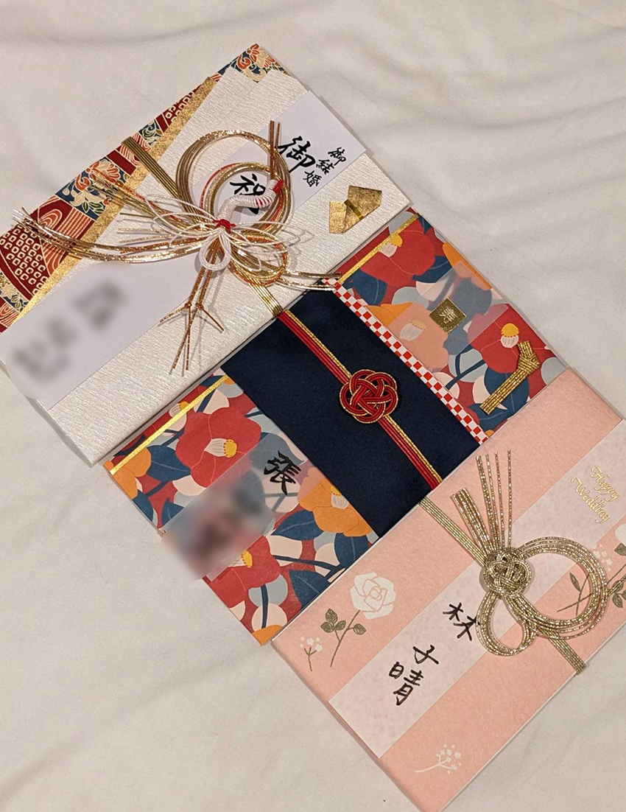
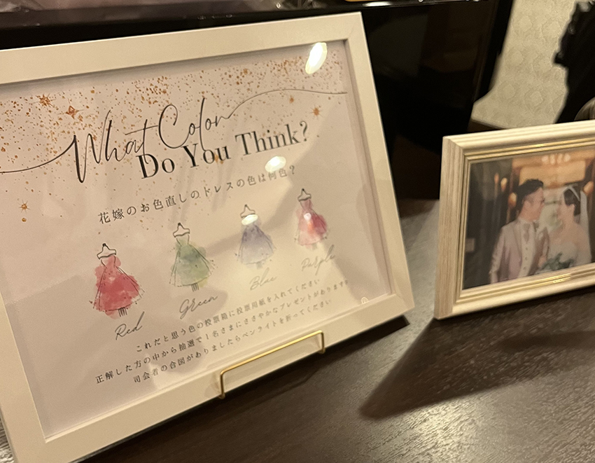

「各位，我的婚禮將在9月24日在神戶的三宮舉行，如果你們能來，我想邀請你們參加！」LINE群組裡，日本好友早紀的訊息如此傳來。她是我在大阪交換學生時期認識的朋友，於是人生中即將第一次因為「參加婚禮」而踏上旅途。
為了不失台灣人面子，我和幾位同期留學的朋友開始做行前功課。我們發現日本婚禮從賓客服儀開始，就與台灣有很大的差異。例如：女生方面衣著要是裙裝（不可全黑或全白）、包趾跟鞋、頭髮要盤起…等等。禮金方面，一般友人約3萬日圓，依交情遞增到5萬或7萬日圓，禮金袋選擇也有相關規定，相比台灣用紅通通代表喜氣的紅包，日本禮金袋是白包，搭配的造型五花八門，袋子華麗程度一般會與禮金成正比，也就是說如果包3萬日圓，卻使用非常華麗的禮金袋，也是一種失禮。因此日本禮金袋販售，都會標示是適用多少禮金的。
做足準備後，來到期待已久的出發日！由於這次行程預計下飛機就前往神戶，我們選擇不搭電車，而是在關西機場搭乘神戶高速船，直接從關西空港到神戶空港再轉乘電車，由於神戶空港只有國內線，幾乎沒有外國遊客，這樣不但比較便宜，且能避開大阪市中心人潮，若是有計畫關西旅遊，也可以試直接搭船到神戶再玩回大阪！
抵達神戶已近傍晚，我們在神戶市區逛逛，除了採買這次婚禮要使用的日本禮金袋，也順便感受一下神戶帶點異國風情的西式街景，非常浪漫！難怪日本朋友總說，通常聽到神戶出身的人，就會有種阿～好時髦的感覺！天天在這樣的美麗街景薰陶之下，也難怪讓人有這樣的印象呢！晚上大家在飯店裡，小心翼翼地把禮金袋寫好並包裝好，畢竟一個袋子要200台幣呀！再三確認完，就等著婚禮到來囉！
|  |
| 大家各自選不同風格的禮金袋，正中間的是朋友擔心自己字不好看，在日本網站事先訂好代寫服務，請店家直接寄送到飯店的！ |
婚禮當天一早，9點就出發到婚禮會場---KOBE St. MORGAN CHURCH，因為日本朋友非常貼心，事前為我們預約了髮型設計，大概是知道台灣女生經常披頭散髮吧？哈哈。對於不習慣編髮的台灣女生，如果自己處理，還真不知道要花多少時間呢！總之，真是幫了大大的忙！我們各自準備了喜歡的髮型照片，讓髮型設計師幫忙實現，難得盛裝打扮一次也讓人覺得很新鮮呢！
| KOBE St. MORGAN CHURCH. |
| 日本造型師幫我弄的婚禮hair set。 |
待證婚儀式（日文稱作：挙式）時間到，我們到了會場2樓的教堂，聳立在面前的教堂彩色玻璃，以及現場弦樂與管風琴演出都讓人目瞪口呆！緊接著新郎新娘進場，賓客們齊唱了讚美歌，在牧師祝禱之下，新人交換戒指與宣言完成儀式，並為新人退場時撒下白色花瓣送上祝福，好像就在日劇場景，浪漫得不真實！
儀式結束與新人拍完照後，賓客就前往5樓的宴會廳準備參加披露宴。這邊跟台灣的婚禮沒有太大的差異，一樣是報到台簽到、交禮金，也收到了婚禮紀念品跟蛋糕，唯一不一樣的是，我們居然另外收到了車馬費！事後問了其他日本朋友，才知道遠道而來的賓客來參加婚禮，還有這方面的禮俗呢！
|  |
| 婚禮小互動-入場前，先猜新娘二次進場的婚紗顏色。 |
進入宴會廳，被工作人員引導入席又是另一個文化衝擊，因為我們居然被安排在最前面正中間的圓桌（也就是台灣婚禮主桌的位置）！同桌賓客也都是當時交換學生認識的日本同學，了解之下才知道，日本人婚宴裡，原來家屬位置是排在最後面、靠近門邊的位置，等於招待方，隨時能招呼後續進來的賓客。新郎及新娘則是坐在會場最前面，與賓客們面對面。
披露宴開始，由新人先致詞感謝賓客、放新人影片，並由新人公司主管上台致詞（朋友夫婦是公司同期），然後開始上菜。日本的餐點通常都是一人一份，由前菜-湯品-主菜-甜點等等，由工作人員陸續上餐。另外飲品，一開始還疑惑桌上怎麼放那麼多杯子，搞得桌子很滿，一打開桌上酒單，滿滿的品項，還有調酒，十分講究的不同酒搭配不同類型杯子，全部喝到飽，心想～果然是酒精不可少的日本人啊！
| 是大家大學青澀的模樣！ |
 |
| 跟台灣整桌合菜的婚宴不同，像西式套餐一人一份。 |
| 不誇張，桌上一半都是放大家的杯子！ |
用餐過程中，賓客會陸續上前與新人寒暄合照，婚禮中間也配合上菜空檔，搭配互動活動，例如：新娘丟捧花、新郎丟花椰菜、新娘二次進場猜禮服顏色等等。
| 二次進場的婚紗公布是紫色！因日本朋友在意肖像隱私所以模糊處理。 |
婚禮尾聲，投影幕上映出當天的花絮影片，新人站在台前，雙方家屬站在後方門口，朋友拿著麥克風對家人表達感謝，一開口：お父さん、お母さん……我的眼淚就忍不住掉下來，接著聽到同桌的、隔壁桌的，越來越多擤鼻涕的聲音，聽著新娘表達對家人從小養育的感謝，好像在這天，跟著新人一起坐上時光機，回憶了他們過往的30年。
| 攝影團隊很有效率把婚禮2/3的部分都剪進去了！ |
| 朋友最後感謝家人的部分，自己也哽咽了。 |
出了會場，畫風一轉又變搞笑風格，新人一家全部戴上了鯛魚帽，以諧音表達感謝（ありがたい），真的是熱愛諧音梗不分國籍呀～也為這場婚禮畫下輕鬆幽默的句點。
| 朋友一家賣力的搞笑裝扮～ |
結束一整天婚禮，拖著被高跟鞋摧殘整天的雙腳，搭車到了大阪市區，再買一些伴手禮，就準備回台灣囉！由於這次關西行主要是參加婚禮，還有疫情後第一次來日本的回憶兼血拚之旅，行程沒有安排太多觀光景點，但有特別重溫了以前神戶最愛吃的Red Rock烤牛肉丼飯、大阪あぶりや國產燒肉吃到飽，都是十年前吃過還念念不忘的！
| 神戶Red Rock烤牛肉丼飯。 |
| 大阪 あぶりや國產燒肉吃到飽。 |
這趟旅程雖然沒有安排太多觀光行程，但卻充滿了許多溫暖回憶。見證朋友的婚禮，感受到日本婚禮的獨特文化，這些經歷讓我深深體會到日本人對儀式的重視與細膩。這場有笑有淚的婚禮，既像一場日劇般美好，又真實得讓人久久難忘。這次的關西旅程，將永遠成為我心中一段珍貴的回憶吧！